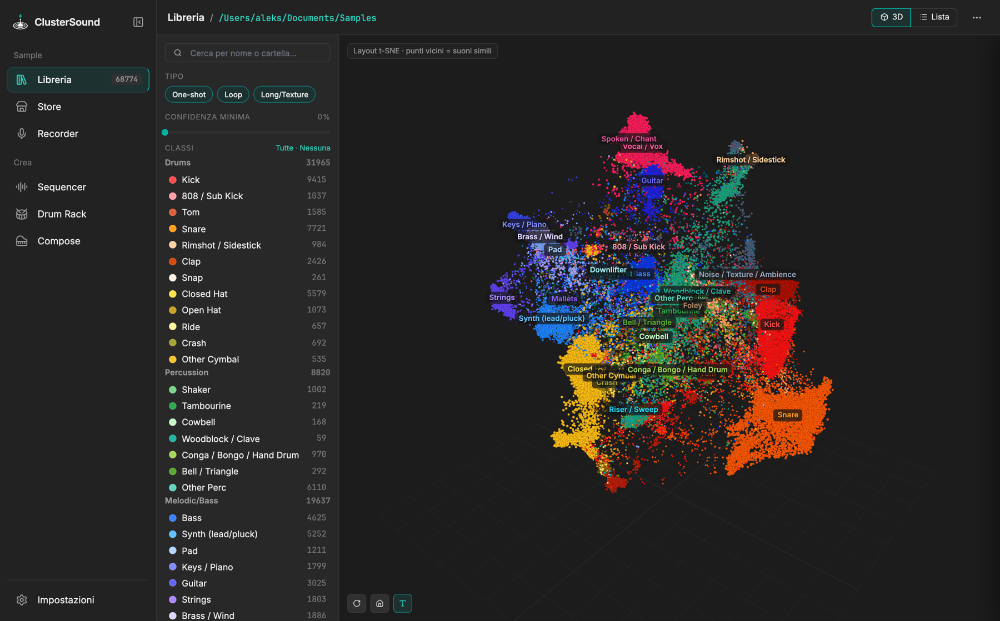

ClusterSound¶
Classifica, esplora in 3D e mette al lavoro la tua libreria di sample. App desktop per macOS e Windows che analizza una cartella di sample audio, assegna ogni file a una classe di suono — kick, snare, hat, 808, pad… — e mostra l'intera libreria come una nuvola 3D in cui i suoni simili stanno vicini. Da lì costruisci kit, groove e progressioni e li porti in Ableton Live. Tutto in locale, senza mai modificare i tuoi file.

Installa Manuale Come funziona
Cosa fa¶
- Libreria — 34 classi, sottogruppi di suoni simili, mappa 3D t-SNE, Trova simili, correzioni che insegnano al classificatore. →
- Store — sample e pack gratuiti da Freesound, Openverse, Internet Archive e ccMixter, filtrati per strumento e licenza. →
- Recorder — registra l'uscita audio, taglia sui transienti, separa gli stem e restaura l'audio compresso con l'AI. →
- Sequencer — 191 groove di 47 generi per provare i sample, layer, arrangiamento ed export per Ableton. →
- Drum Rack — kit di sample simili per Launchpad 8×8 e Roland SPD-SX. →
- Compose — progressioni da un chord pack con suggerimenti armonici, variazioni, melodie e bassi generati. →
Come è fatta¶
- Guida rapida — installazione, primo avvio, Ableton Live, build: pochi passi.
- Manuale — ogni sezione dell'app, con screenshot.
- Tecnica — architettura, backend Python, frontend web, dati, integrazione con Live.
- Modelli AI — YAMNet in numpy, classificatore MLP auto-addestrato, Demucs, Apollo.
- Algoritmi — classificazione, clustering, scelta dei sample, groove, armonia, melodia.
- Riferimento — classi, impostazioni, scorciatoie.
Lingua
L'app e questa documentazione sono in inglese, con la versione italiana sempre disponibile. Nell'app la lingua si sceglie in Impostazioni › Generale › Lingua; qui con il menu della lingua in alto nella pagina.